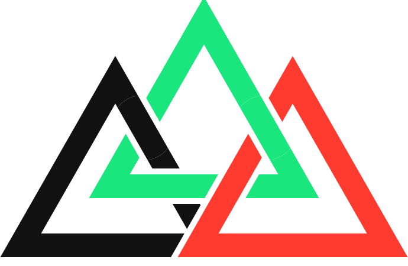

TRI·LABStrategia e numeri, messi in un piano che si esegue, non slide.
Chi guida un'azienda deve rispondere a tre domande: come si muove il mercato, dove sta l'azienda oggi, cosa deve fare per arrivare dove vuole. Il Business Hub risponde con metodi concreti, usati da anni nella consulenza manageriale seria (non slide motivazionali), applicati alla tua azienda, con l'AI a velocizzare analisi che prima richiedevano settimane.
Quattro passaggi in sequenza: l'esito di ognuno è la base del successivo. Alla fine si assemblano nel Business Planning Completo. Clicca una voce per aprirne la pagina.
Indipendenti tra loro, attivabili singolarmente. La Contabilità Manageriale è un pacchetto di due servizi che lavorano insieme.
Non sai da dove partire? Il Business Planning Completo integra tutti i passaggi in un unico percorso.
Apri il Business Planning Completo →